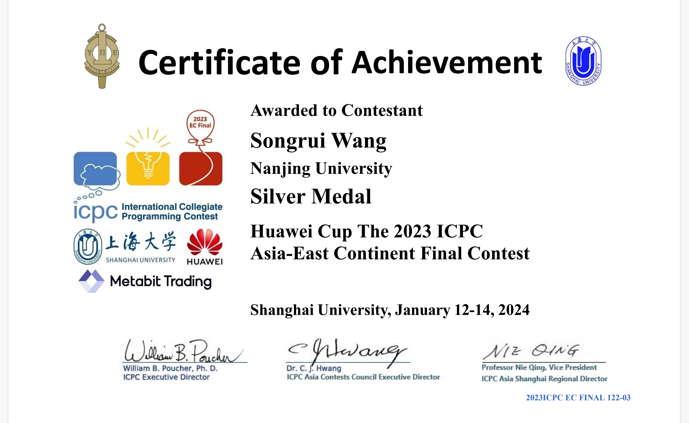
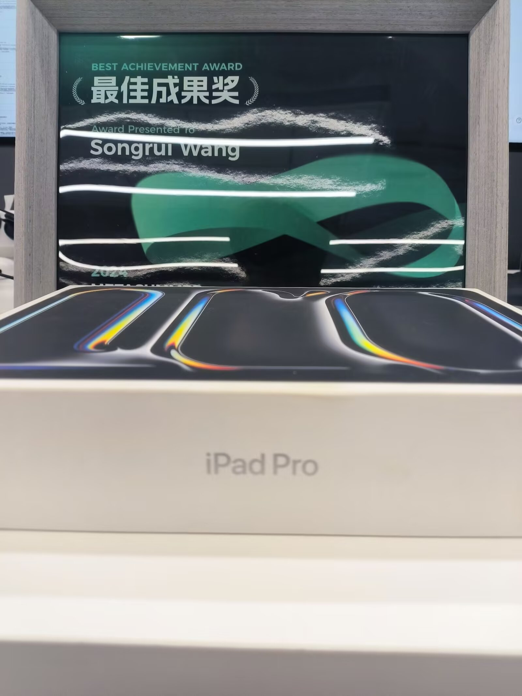
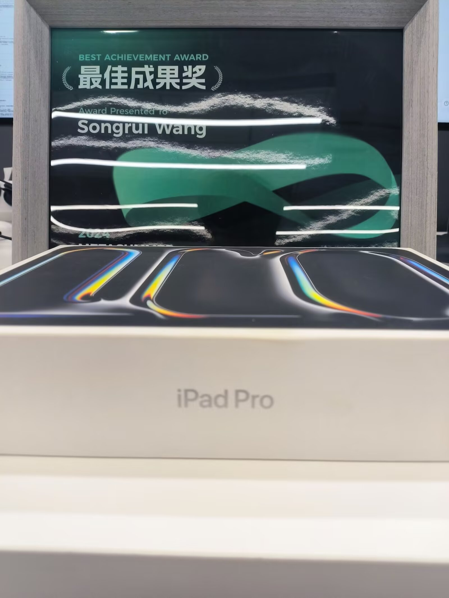

Metabit trading 实习记录
Metabit trading 实习记录
缘起
虽然对量化早有耳闻，但是没想到第一次线下接触量化公司竟然是在icpc ecfinal亚洲总决赛的现场。
开幕式上，继华为过后，美国对冲基金公司Jane street的老总亲临现场，用英语做了一个简单的量化介绍，并幽默地讲解了一个小算法。不止是Jane street，在现场还有很多国内外的量化公司，挺意外赞助席除了华为和自动驾驶，还有这么多量化公司对算法竞赛感兴趣。
比赛前，按照惯例，我拉着队友在会场到处领各家大小厂的周边，其中就有乾象投资的电子木鱼。

当然，白嫖周边的代价是添加HR和企业微信。
于是，在三月初春，一条量化实习招聘的微信消息出现在了我的手机，也没多想，抱着玩玩的心态顺手投了简历。
事后发现，乾象(Metabit Trading)竟然是华为之后第二赞助大爹。
面试
面试贯穿了整个三四月，共计五场，一场大概四五十分钟的样子。
由于实习不是我的重心，所以并没有也没啥时间准备面试。
鉴于保密协议，我就不展开讲了，只谈一下大概面了啥。
- 一面：聊了实习时间地点，个人简历，确认了有时间参加暑期北京三个月保底的实习。（不出意外期末考试前两周没法留在南大复习了，所幸这边批了一周的假放我回南京考期末）
- 二面：概率论以及数学建模的问题，主要是一些期望概率上的智力题，怪有趣的。
- 三面：coding面，要求用python手撕算法题，秒了题目思路后，被corner case拷打了一小下。
- 四面：mentor面，鉴于我没有任何量化经历，改成了聊数学题，依然是小清新风格的思维题。
- 五面：behavior面，问了我两段科研经历，以及为什么选择量化。
面试结束后，自我感觉还行，几乎all kill了所有问题。但是鉴于我才大二，这个项目理应开给大四，或硕博生（这坑人的实习时间意味着来实习就得放弃期末考试），所以只是抱着见见世面的心态去面试的。
准备
意外收到了offer，看来icpc的牌子还是有点用的。
在妥善安排了实习时间和各种实习协议后，我向Mentor请教了一些预习书籍。真零基础地去实习，担心自己吃不消。
于是就收获了Narang的《Inside the Black Box》，和numpy，panda的数百道习题。
五到六月没什么空余时间，LAMDA组强化学习的论文复现和RL算法整理；COESC组diffusion后门水印的论文也进入了写作阶段（感谢ZYB学长的协助）；jyy的OS课也向我持续地输出（上学期逃掉ICS课的代价多少要还一些）；最后还要处理假条批，租房以及南大其它课程的作业和复习。
忙里偷闲，到目前（5.19）基本上看完了《Inside the Black Box》，然而panda练习题还没开动。感觉书讲得很浅，相当于过了一遍量化涉及的基础金融知识，对于实际算法的设计并没有太大帮助。
不过，就这样吧，作为最小的员工，也许会照顾一些呢？
Metabit Trading Intern
To be continued…
分割线
暑假过得很快，北京的天气也不再灼热，转眼间实习结束重返nju了。
总的来说，第一份实习完结撒花！认识了一群非常棒的伙伴，也接触了一个富有活力的行业。很久没有过这么开心且充实的暑假了。
-
主要的时间花在美股日频中性策略上，走的是以量取胜的因子策略，400core的服务器并行起来确实很爽。自己设计了一套搜索框架。
-
也花时间尝试了下手搓大因子，不过金融基本面分析还差点功夫，内功不够，也有model经验不足的原因，效果不尽人意哈哈哈。
-
最后，抽了10000个入库因子开展了因子combo的工作。这一块真就数学主导，在主基调mean-variance模型的基调上，实践了一些有趣的猜想。
作为最年轻的员工常向HR，Mentor还有超强的同事请教。感谢他们的耐心和指导，超靠谱的战友与伙伴~
quant确实是一个很有趣的行业，也是一个很有挑战的行业。实习摸透了自己到底有几斤几两，需要点的技能树还有很多很多，大三不准备找日常实习了，还是沉淀为佳。
最后的最后，恭喜自己拿到了美股组所有奖项冠军。
 
